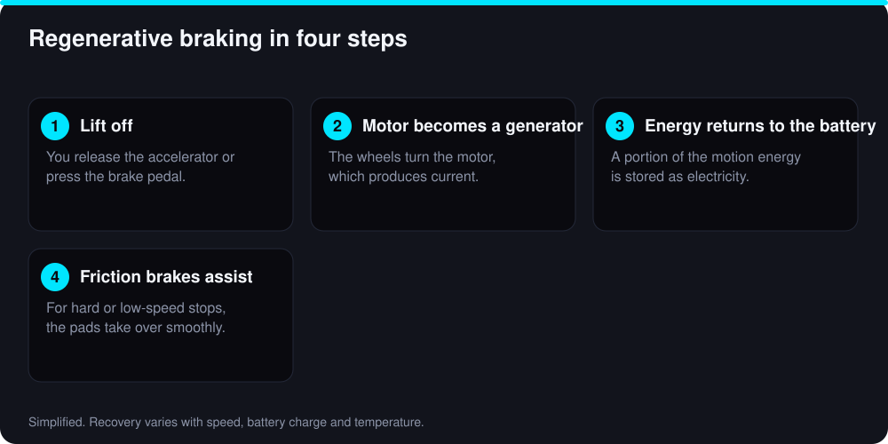

Every time a normal car brakes, the brake pads turn motion into heat and the energy is gone. An electric car can do something smarter: it can turn part of that motion back into electricity and put it in the battery. That is regenerative braking, usually shortened to regen. It is one of the reasons EVs are so efficient in town, and it is behind the driving style called one-pedal driving.
How regenerative braking works
An electric motor and a generator are close relatives. When you press the accelerator, current flows through the motor and it pushes the wheels. When you lift off, the car’s software can reverse the job: the wheels turn the motor, the motor generates current, and that current flows back to the battery. Turning the motor takes effort, so the car slows down. That resistance is the braking you feel.

The process is not perfect. Some energy is lost as heat in the motor, inverter and battery, and some was already lost to air drag and tire friction before you even lifted off. Real cars recover a portion of the energy, not all of it, and the share varies with speed, battery state and temperature.
A worked example
Take a car weighing 2,000 kg (about 4,400 lb) slowing from 45 mph (about 20 m/s). Its motion energy is half the mass times the speed squared, roughly 405,000 joules, or 0.11 kWh. If we assume, for illustration, that 60% of that is recovered, the battery gains about 0.07 kWh. At 3.5 miles per kWh, that is around a quarter of a mile of range from one stop.
That sounds small, and for one stop it is. But in city driving with dozens of stops in a day, it adds up to several miles, and it means the brakes do far less work. On a steady highway, where you rarely slow down, regen has little to recover, which is why EVs often do relatively better in town than gas cars do.
The 60% recovery rate is an assumption for illustration, not a measured figure for any particular car.
What one-pedal driving feels like
Many EVs let you choose how strong the regen is when you lift off the accelerator. At a low setting the car coasts almost like a gas car. At the highest setting, often called one-pedal mode, lifting off produces strong, steady deceleration, and you control your speed mostly with the accelerator alone. Depending on the model, the car may come to a complete stop, hold itself at a stop, or creep slowly forward.
- Smoother in traffic. You rarely need to move your foot to the brake pedal.
- Takes practice. Passengers may notice a nodding motion until you learn to release the accelerator gradually.
- Brake lights come on when deceleration is strong enough, so drivers behind you are warned. This is required in many markets.
- You can still use the brake pedal at any time. The car blends regen and friction brakes for you.
When regen is limited
Regen needs somewhere to send the energy, and the car protects the battery. That means it can feel weaker in some situations:
- Battery nearly full. Right after charging to 100%, the battery has little room to accept energy, so regen is reduced until you use some charge. This is one reason many makers suggest not charging to 100% every day.
- Cold battery. In freezing weather the battery accepts charge more slowly, and regen power is limited until it warms. Our winter range guide explains more.
- Very hard stops. In an emergency the friction brakes take over.
- Slippery roads. On ice or snow, strong regen on the driven wheels can cause them to lose grip. Many cars limit it automatically, but a lower setting can feel more predictable.
Regen versus coasting
Regen is efficient, but it is still a conversion, and conversions lose some energy. The most efficient way to slow down is not to need to brake at all. Reading the road ahead, easing off early and coasting toward a red light saves more than braking late and relying on regen to claw the energy back. Think of regen as a safety net for the energy you could not avoid spending.
Effect on brakes and the battery
Because the motor does much of the slowing, friction brakes wear far less, so pads and rotors can last longer than on a gas car. They still need inspection, since rarely used brakes can rust. Our EV maintenance guide covers what to check.
Regen does not harm the battery when the car manages it correctly. The car limits how much power flows in based on temperature and charge level, and cars are designed with regen in mind.
Tips for using regen well
- Try it in a quiet place first. Find an empty road and practice releasing the accelerator smoothly until you can stop at a marked spot.
- Use higher regen in the city and a lower or coast setting on the highway if your car offers a choice.
- Look ahead. Lift early for slowing traffic so the car slows gradually and stays smooth.
- Adjust for weather. Use a lower setting on ice and snow if the car feels twitchy.
- Watch the display. Many cars show a power meter or an icon when regen is limited, which tells you when the battery is cold or full.
- Do not rely on it as your only brake when towing or driving down a long steep hill. Use the brake pedal and follow your owner’s manual.
Bottom line
Regenerative braking recovers a useful share of the energy you would otherwise waste, makes city driving more efficient and reduces brake wear. One-pedal driving is a comfortable way to use it once you have practiced. Learn how your car’s settings work, expect weaker regen when the battery is full or cold, and remember that smooth anticipation beats hard braking in any car. For more ways to stretch your range, see our EV specs explained guide.
Sources and further reading
Figures marked as illustrative are worked examples built from the stated assumptions, not measured averages. Prices, incentives and specifications change, so confirm current details with these primary sources before you decide.
- FuelEconomy.gov: Electric vehicles (US DOE / EPA)
- Alternative Fuels Data Center: Electric vehicles (US DOE)
- Your vehicle owner’s manual: service intervals, tire pressures and battery warranty terms
Frequently Asked Questions
No. It adds a small amount of energy during braking and cannot replace plugging in. When the battery is already very full, the car limits regen because there is nowhere for the energy to go.
Yes. Every EV has friction brakes, and the car blends them with regen automatically. They take over for hard stops, low-speed stops and when regen is limited.
It can be smoother and reduces how often you move your foot between pedals, but it is a driving style, not a safety feature. You should still know where the brake pedal is and use it when needed.
Only a little. Regen recovers energy when you slow down, and on a steady highway drive there is little slowing. Its biggest benefit is in stop-and-go and hilly driving.
Bilal Ahmad Alvi
CEO, FutureAutoLab
Written and reviewed by Bilal Ahmad Alvi, CEO of FutureAutoLab, following our editorial policy. Spot an error? Tell us and we will correct it.